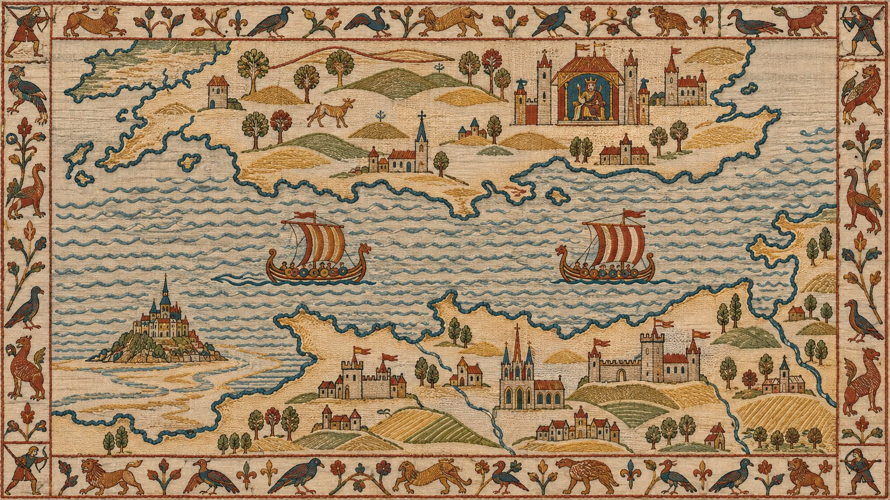

Seventy metres of linen, one very bad promise, a comet, a chicken on a stick and an arrow that may or may not be in the right eye. The whole story of how England got new bosses in 1066, stitched by people who were there or nearly, and who hid rude jokes in the borders. Twenty-four scenes, each under a layer of old linen. Unroll each one and the stitches show through, with the story: who is in it, what they were up to, and how it ended (badly, for Harold).
24 scenes under the linen

A tapestry-esque map, stitched in the tapestry's style for this page. The real tapestry has no map, and these coasts are not to scale.
The red thread lights up the journey in the scene you are unrolling.Tap the map to open it
1064The cloth, in order. Each block is one scene; the colour is the act. A white dot means you have unrolled it.14 Oct 1066
The whole clothAll 70 metres, end to end, from the museum's own scans. Drag along it, or press Scroll and let it walk itself. Nothing to unroll.Scene 1 to 58
Scene 1Edward sends Harold
The cast
Three men, one crown.
The cloth gives everyone the same face, so here they are as they might have looked. Nobody painted any of them from life; these are portraits built from what the chroniclers said.
Edward the ConfessorKing of England 1042–1066 · about 60 in 1064Tall, pale, with white hair and a long beard, and fingers people said could heal. Spent 25 years in Normandy as a boy. Prayed a lot, hunted a lot, and left no heir.Harold GodwinsonEarl of Wessex, then king for nine months · about 42 in 1064Big, strong, handsome and easy with people, said even the Normans. English hair to the collar and a moustache. The richest man in England who was not king, and then, briefly, the one who was.William of NormandyDuke since age 7 or 8 · about 36 in 1064Stocky, very strong, a harsh voice, hair shaved high at the back in the Norman way. Duke from childhood, survivor of three murdered guardians. Got heavy later; nobody said so to his face.
Taking stock
Your stretch of the cloth
The real thing is about 70 metres long and 50 centimetres high, in nine pieces of linen sewn end to end, and the Normans never finished it, or finished it and lost the end. Twenty-four scenes here stand for its fifty-eight, so each one you unroll is worth roughly three metres of cloth. Unroll them all and you have walked the length of it, which in the museum takes about twenty minutes if nobody in front of you stops to look for the arrow.
The object
Not a tapestry. Not French. Not finished.
Three things to get straight before anyone catches you out. One: a tapestry is woven on a loom, with the picture in the weave. This is embroidery, wool stitched onto linen with a needle, which is a completely different thing, and the French call it "la Tapisserie de Bayeux", which is the same mistake with a better accent. Two: it was almost certainly made in England, probably at Canterbury, by English needleworkers, for a Norman bishop, within about ten or twenty years of the battle. Three: it stops mid-chase with a ragged edge, and whatever came after Harold's death is gone. The counts below are the museum's own. Somebody sat down with the whole 70 metres and a pencil.
70 mlong
50 cmhigh
626people
202horses and mules
55dogs
41ships
37buildings
3women
Wool on linenAbout ten shades, three dye plantsThe outlines are stem stitch, a line of overlapping stitches. The filling is laid work: threads laid side by side, held down with crossing threads, which uses far less wool than filling everything in. The colours come from woad for blues, madder for reds and weld for yellows, mixed into greens and browns. Nine hundred and fifty years on, most of it has barely faded, because wool dyed with plants does not care.
Who paid, who stitchedOdo, probably, and English women, probablyBishop Odo of Bayeux appears in the cloth four times doing important things, three of his Kentish tenants have their names on it, and his cathedral is where it has lived since anyone can remember. The style of the drawing matches manuscripts from St Augustine's Abbey in Canterbury, in Odo's new earldom of Kent. English embroidery was famous across Europe. So: an English workshop, a Norman bill.
Four near misses1476 to 1944First written down in 1476, in a list of the cathedral's stuff. In 1792 revolutionary soldiers grabbed it to cover a wagon and a local lawyer talked them out of it. In 1803 Napoleon put it on show in Paris to warm people up for his own invasion of England, then called the invasion off. In 1944 the Germans had it moved to the Louvre with a plan to take it to Berlin; Paris was freed first.
Where it is right nowLondon, until July 2027Its home is the Bayeux Museum in Normandy, in a dark room, behind glass, under lights so low you squint. In September 2026 it came back to England for the first time in over nine hundred years, on loan to the British Museum, and is there until 11 July 2027. Then it goes home to a rebuilt museum. Adults pay to see it in London. Under-16s do not, which the embroiderers, who put a rude man in the border for you, would have approved of.
Getting there
Until 11 July 2027: the British Museum, London, Room 30. Tube to Holborn or Tottenham Court Road. Tickets are timed; book. Under-16s go free with an adult.
After that: the Bayeux Museum, Bayeux, Normandy. Train from Paris Saint-Lazare to Bayeux, about two and a half hours; the museum is a ten-minute walk from the station. The cathedral it was made for is five minutes further.
Dates and prices move. Check before you go; the cloth has waited 950 years and will wait while you look it up.
Outstitch the museum · with knowledge
Why is "tapestry" the wrong word for it?
The Legacy
What 1066 left behind. You are still using it.
Harold lost in a day. England spent the next three hundred years finding out what that meant: a new ruling class, a new language on top of the old one, castles on every hill, and a book that listed every pig. Some of it you can stand in. Most of it you are speaking.
ThenNow
The words on your plate1066 onwards · every English speakerCow, pig, sheep, deer: English words, used by the Saxons who looked after the animals. Beef, pork, mutton, venison: French words, used by the Normans who ate them. Both sets survived, and English is almost alone in using completely unrelated words for the animal and the meal. Then came about ten thousand more French words: castle, prison, judge, jury, parliament, government, army, beauty, dinner.Why it survived: the Normans ran the courts, the Church and the army for three centuries and never bothered to learn English properly, so English learned French instead.Getting thereOpen your mouth.
ThenNow
Domesday Book1086 · WilliamTwenty years after the battle William sent men to every corner of England to write down who owned what, how much it was worth, and how many of everything there was. The English chronicle complained that not one ox, cow or pig was left out. The result is two fat books, the oldest public record in England, still used in court cases in the twentieth century.Why it survived: it was the government's proof of who owed what, so the government looked after it. The name is a joke the English made: Doomsday, because there was no appeal.Getting thereThe National Archives, Kew, London. Tube to Kew Gardens. The original lives in a strongroom and only comes out for special exhibitions; a facsimile is on show, and the whole thing is online. Free.
ThenNow
The Tower of LondonBegun about 1078 · WilliamA stone tower on the river, bigger than any building the English had, with its corners and windows cut from stone shipped all the way from Caen in Normandy, to remind London who was in charge. It worked. It has been a palace, a prison, a zoo, a mint and a safe for the Crown Jewels, and it is still all there, with ravens.Why it survived: a 30-metre stone box with walls four metres thick is very hard to get rid of, and every king found a use for it.Getting thereLondon, Tube to Tower Hill. Book ahead. Go to the White Tower first; that is William's.
ThenNow
Battle AbbeyFounded 1070s · WilliamWilliam had an abbey built on the battlefield, with the high altar on the spot where Harold fell, as penance for the killing. The town that grew up round it is called Battle. Henry VIII shut the abbey down in 1538, but the gatehouse, the ruins and the stone marking the altar are all there, on the ridge, with the slope the Normans charged up in front of you.Why it survived: the monks were thrown out but the land was too valuable to flatten, and the slope is still a slope.Getting thereBattle, East Sussex. Train from London Charing Cross, about an hour and twenty minutes, then a ten-minute walk up the hill. The battlefield walk takes an hour. Do it in October if you can.
ThenNow
Castles. Everywhere.1066 to 1100 · the NormansEngland had a handful of castles before 1066. Within a generation it had hundreds: a motte and bailey in every town that mattered, dug by the English for their new landlords. Many later got stone walls and some are still lived in. Windsor was started by William around 1070 on a chalk cliff above the Thames, and the King still sleeps in it.Why it survived: a hill with a fort on it is a hill with a fort on it. Even when the fort fell down, the hill stayed, and most "Castle Hills" in English towns are one.Getting thereWindsor Castle: train from London Paddington or Waterloo, under an hour. The Round Tower sits on William's motte. For an unspoilt one, Berkhamsted in Hertfordshire, built straight after 1066, or Pickering in Yorkshire.
ThenNow
Westminster AbbeyConsecrated 1065 · EdwardThe church in the funeral scene. Edward built it, Harold was crowned in it, and so was William, on Christmas Day 1066, while his guards set fire to the street outside. Every king and queen of England since has been crowned there, apart from a handful who never got as far as a coronation. Edward is still inside, in a shrine behind the high altar, a saint since 1161.Why it survived: once it had Edward's bones and the coronations, nobody could touch it. Henry III rebuilt it in the 1200s, which is the building you see, but Edward's shrine still stands behind the altar.Getting thereLondon, Tube to Westminster. Not free, and not quiet. Edward's shrine is behind the altar; ask a verger.
Outlast the Normans · with knowledge
Cow is English and beef is French. Why does English have both?
Why learn this?
One year, three kings, and seventy metres of evidence.
Because it is a story told in pictures, and you can read it.Fifty-eight scenes, left to right, with captions, borders full of commentary, and tricks like the ghost ships in the border under the comet. It is a comic strip from 1070, and every comic since works the same way.
Because the winners made it, and you can watch them spin.The Normans paid for it. So Harold is only DUX, a leader, until he is crowned. After that even the Normans have to call him REX, and they do it right up to the moment he dies. The wrong archbishop stands at his elbow. The oath gets a whole scene. Learn to spot it here and you can spot it everywhere.
Because it is where English comes from.Before this cloth, English had almost no French in it. After it, half your vocabulary. Every word on this page that ends in -tion, -ment or -age walked up the beach at Pevensey.
Because the little details are true.Mail carried on poles. Horses standing in boats. A castle mound in striped layers. Chickens on skewers. Whoever drew this had seen it done, and nine centuries later it still checks out. That is what evidence looks like.
embroideryim-BROY-der-eea picture or pattern sewn onto cloth with a needle and thread. The Bayeux "Tapestry" is embroidery, wool on linen, and will be called a tapestry forever anyway. Pick your battles.
tapestryTAP-iss-treecloth with a picture woven into it on a loom, so the picture and the fabric are the same thing. Not this. Everyone says it. Nobody is going to stop.
NormanNOR-muna person from Normandy in northern France. "North men": Vikings who settled there in 911, swapped boats for horses, kept the boats, and learned French. The ones with the shaved necks.
Anglo-SaxonANG-glo SAK-sunthe English before 1066, descended from Angles, Saxons and Jutes who crossed from Germany and Denmark 600 years earlier. The ones with the moustaches. Their language is the bottom layer of yours.
conquestKON-kwesttaking a country by force. The Norman Conquest is the one with a capital C, because after it England had a new king, new lords, new laws, a new language at the top and a new word for cow at dinner.
oathOHTHa promise made with God or the saints as witness. Harold's at Bayeux is the hinge of the whole cloth: if it counted, William was right; if it was forced, Harold was. Nine hundred and sixty years later, still arguing.
titulusTIT-yoo-lussa caption. The Latin words stitched over each scene. Plural: tituli. They were written by somebody who knew what they were doing and were just as happy leaving things out as putting them in.
borderBOR-derthe strips above and below the main picture, filled with birds, beasts, fables from Aesop, farm work, ghost ships, a rude man, and finally the dead of Hastings. The embroiderers' own commentary track.
Read the stitching
Twelve Latin words and you can read the whole thing.
The captions use about the same dozen words over and over. Learn them, and the next time you see the cloth you will not need the guidebook. We have tidied the stitchers' spelling a little, as everyone does.
 Edward the ConfessorKing of England 1042–1066 · about 60 in 1064Tall, pale, with white hair and a long beard, and fingers people said could heal. Spent 25 years in Normandy as a boy. Prayed a lot, hunted a lot, and left no heir.
Edward the ConfessorKing of England 1042–1066 · about 60 in 1064Tall, pale, with white hair and a long beard, and fingers people said could heal. Spent 25 years in Normandy as a boy. Prayed a lot, hunted a lot, and left no heir. Harold GodwinsonEarl of Wessex, then king for nine months · about 42 in 1064Big, strong, handsome and easy with people, said even the Normans. English hair to the collar and a moustache. The richest man in England who was not king, and then, briefly, the one who was.
Harold GodwinsonEarl of Wessex, then king for nine months · about 42 in 1064Big, strong, handsome and easy with people, said even the Normans. English hair to the collar and a moustache. The richest man in England who was not king, and then, briefly, the one who was. William of NormandyDuke since age 7 or 8 · about 36 in 1064Stocky, very strong, a harsh voice, hair shaved high at the back in the Norman way. Duke from childhood, survivor of three murdered guardians. Got heavy later; nobody said so to his face.
William of NormandyDuke since age 7 or 8 · about 36 in 1064Stocky, very strong, a harsh voice, hair shaved high at the back in the Norman way. Duke from childhood, survivor of three murdered guardians. Got heavy later; nobody said so to his face.